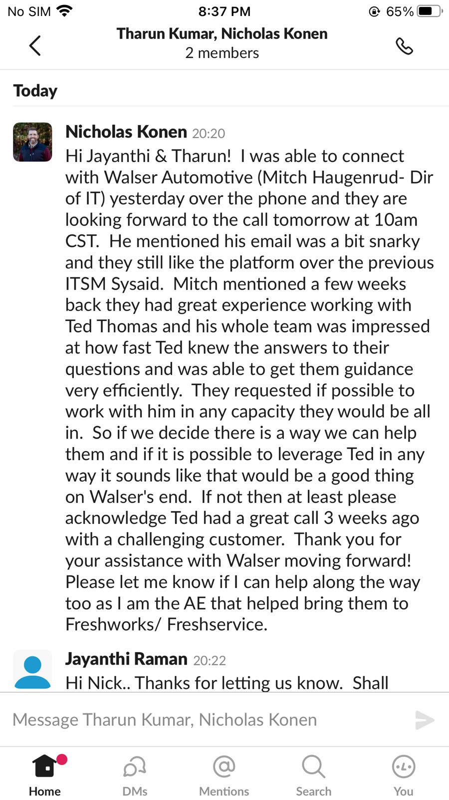

Ted Thomas
Business / Implementation Analyst
Turning business requirements, service workflows, and operational data into digital solutions that teams can actually use.
About Me
I bring experience across SaaS implementation, client onboarding, business analysis, process improvement, and technical support. My background includes configuring Freshservice environments, gathering requirements, documenting workflows, integrating third-party tools, and helping clients move from discovery to adoption with clarity.
Alongside implementation work, I enjoy turning operational data into something useful. I have built dashboards and reports using Freshservice Analytics, Excel, Power BI, DAX, and SQL to help teams understand SLA performance, service trends, workload distribution, and business outcomes.
I have worked across banking, IT service management, and insurance-related environments, collaborating with cross-functional teams and supporting clients through configuration, migration, training, and post-go-live troubleshooting. I am currently based in Ontario and open to remote or onsite opportunities across Canada.
100+
Implementations delivered
97.5%
Client satisfaction achieved
25%
Improvement contribution
23
Process models created
4+
Years of experience
2x
Highest performance band
Certifications
Freshservice Implementation Specialist
Specialized in implementing and optimizing Freshservice environments for client onboarding, workflow configuration, and long-term platform adoption.
Business Analyst Certified
Focused on requirements gathering, process analysis, workflow documentation, stakeholder alignment, and solution design.

SQL for Data Science
Strengthening data querying, analysis, and reporting capabilities for operational visibility and business decision-making.
Google Cloud Fundamentals
Foundational knowledge of cloud concepts and modern digital solution environments used across SaaS ecosystems.
Ansible for DevOps
Exposure to automation-driven workflows that support efficient technical operations and scalable solution delivery.
Java Programmer Certified
Strong grounding in core programming concepts, object-oriented design, and application development fundamentals.
Core Competencies
SaaS Implementation & Configuration
Delivers end-to-end SaaS implementations, configuring modules, workflows, portals, automations, and integrations to match client operating models.
Requirements Gathering & Process Mapping
Runs discovery sessions, captures business needs, documents BRDs and user stories, and translates business processes into scalable workflows and solution designs.
Workflow Automation & Integrations
Builds practical automation using REST APIs, webhooks, SSO, and third-party integrations to reduce manual work and improve service operations.
Analytics, Reporting & KPI Tracking
Turns operational data into dashboards and reports that reveal SLA performance, workload trends, service bottlenecks, and business insights.
Client Training & Solution Adoption
Leads remote training, system walkthroughs, and UAT support so clients understand the platform, adopt best practices, and go live with confidence.
Business Process Improvement
Analyzes current-state workflows, identifies gaps, and recommends practical changes using structured problem-solving and process improvement methods.
Featured Projects
Delivered 100+ SaaS and ITSM implementations across industries
Configured Freshservice instances for clients across healthcare, education, and public-sector environments. Led discovery, documented requirements, customized workflows, supported UAT, delivered training, and helped clients adopt core modules such as Incident, Change, Asset, and Service Request Management.
Improved process visibility through modelling, analysis, and dashboards
Evaluated business processes, built 23 process models in Visio, analyzed data using Excel and SQL, and developed Power BI dashboards for global performance reporting. Supported process improvement efforts that contributed to stronger customer retention and better operational visibility.
Developed scalable banking UI components with React and Redux
Built responsive and performance-optimized front-end components for a banking platform using TCS ADK(React and Redux) a custom library. Implemented customer-facing features such as card block/unblock and transaction limit controls, improving usability and giving users more control over their accounts. Collaborated in Agile sprints with UI/UX designers and backend teams, ensuring seamless integration and consistent user experience across the application.
Client Appreciation



.jpeg.png)
.jpeg.png)

Professional Experience
Customer Service Representative / Bank Teller
Canadian Imperial Bank of Commerce (CIBC)
Executes daily cash and non-cash transactions, updates client profiles through CRM tools, processes drafts and wire transfers, and supports service and product referrals while maintaining compliance standards.
Senior Onboarding Specialist
Freshworks
Led requirement gathering, configured ITSM solutions, migrated data from legacy systems, integrated third-party tools, delivered remote training, supported go-live, and resolved workflow and configuration issues post implementation.
Business Process Analyst
Aviva Insurance | Tata Consultancy Services
Evaluated business processes, identified improvement areas, built process models, analyzed performance data using Excel and SQL, and developed Power BI dashboards for monitoring global operations.
React Developer
TCS Bancs | Tata Consultancy Services
Built scalable front-end banking components using React and Redux, collaborated with UI/UX and backend teams in Agile sprints, and contributed to performance and usability improvements.
Let's Connect
I’d love to hear about implementation, onboarding, or business systems opportunities where I can help teams deliver practical digital solutions and stronger operational outcomes.